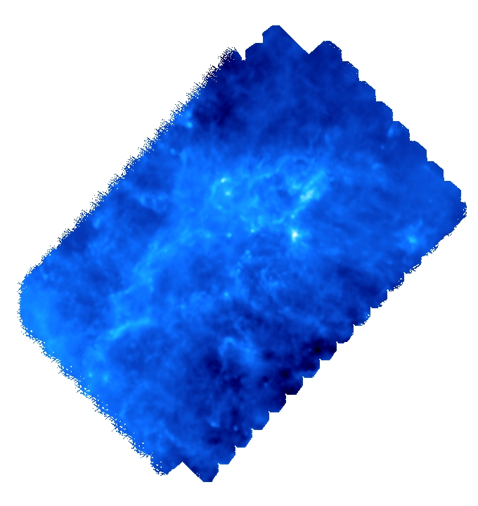
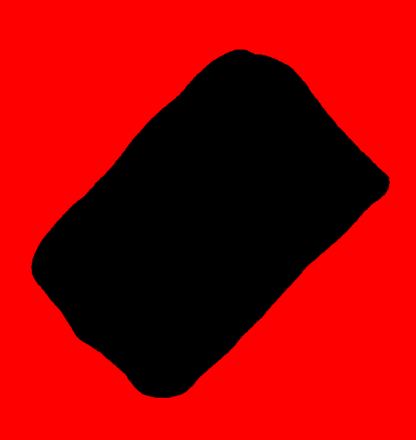
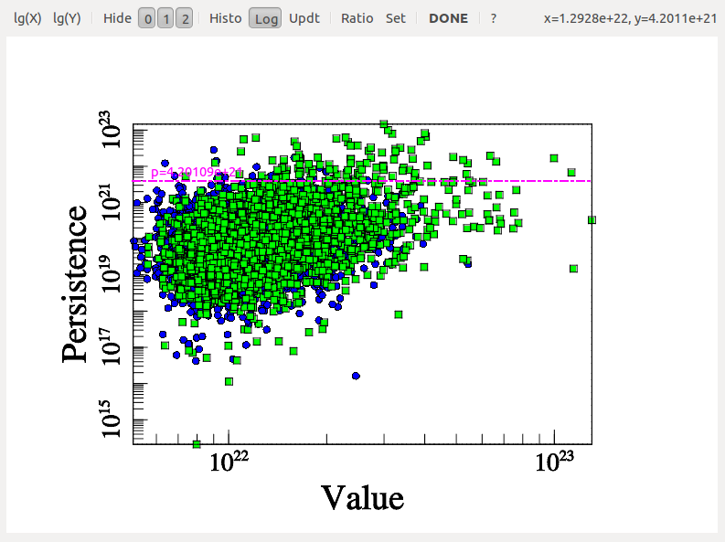
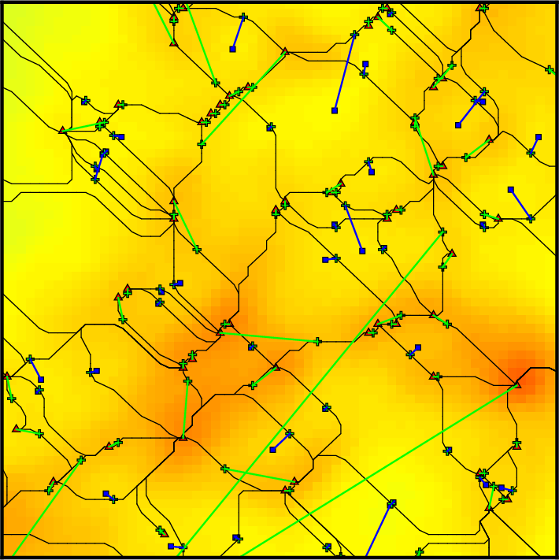
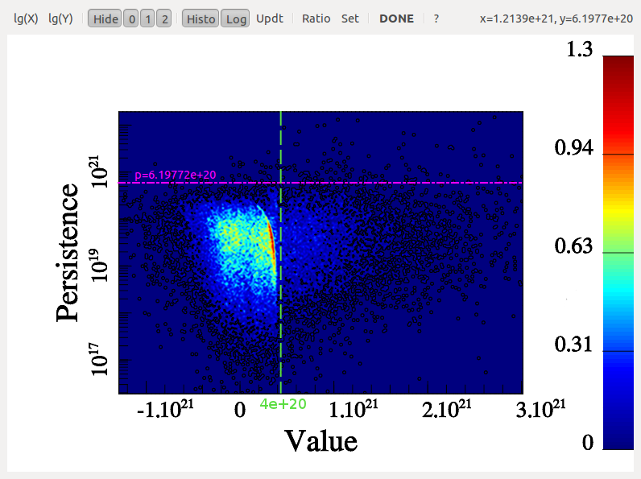
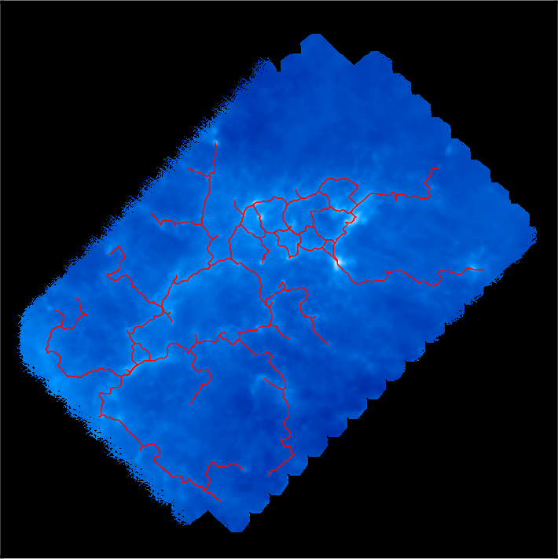
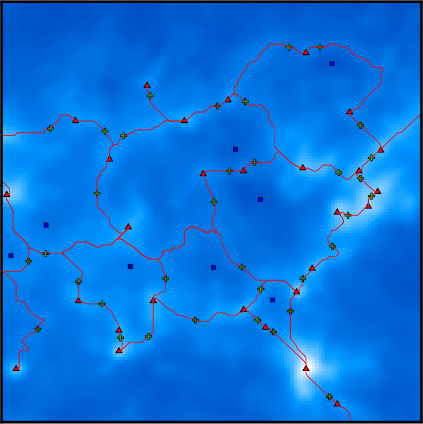
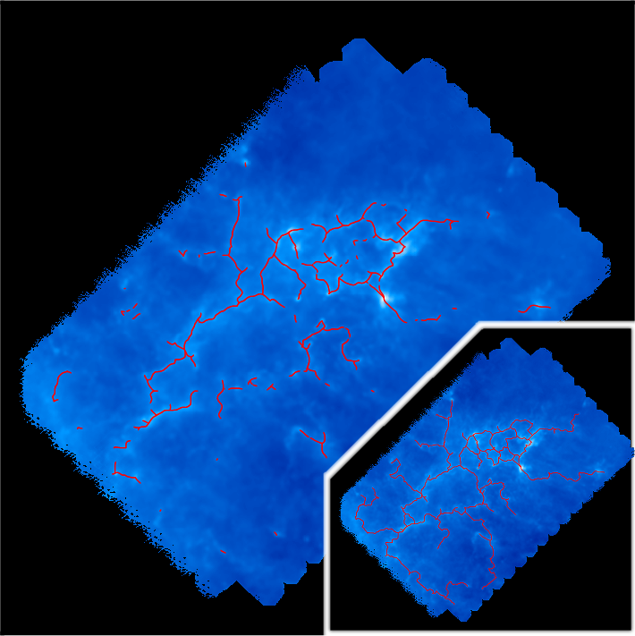
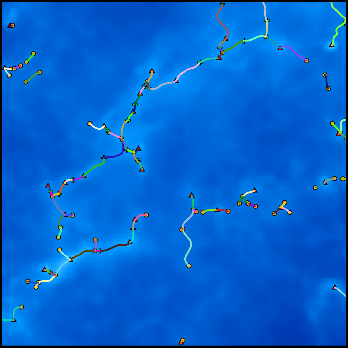
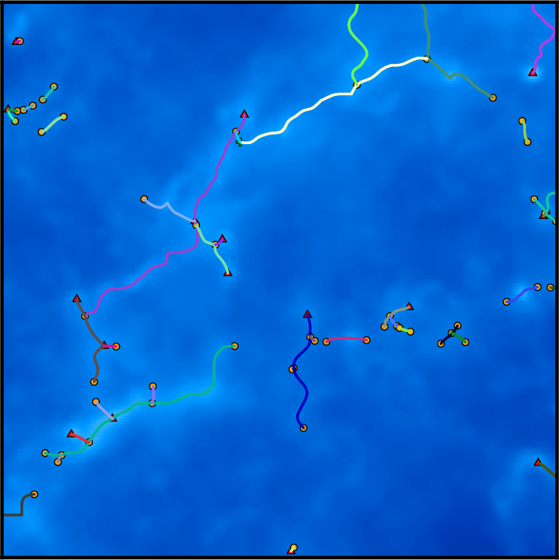

In this tutorial, we will identify the persistent filamentary structures in a diHydrogen column density map of the interstellar medium in the Eagle Nebula (M16) as observed by Herschel . The map is encoded in a 2D double precision FITS image, with pixels set to NaN in unobserved regions:

By default, mse will automatically mask NaN valued pixels so the FITS file could theoretically be fed directly to it. However, because of the complexity of the geometry of the observed region, it is preferable to use a mask to limit the analysis to a well defined region of interest (in particular, it is preferable that this region is simply connected - i.e. does not contain holes -). Designing a mask is relatively simple, as it consists in an image with pixels set to 0 in non-masked region and any other value in the masked regions (this behavior can be changed by adding a trailing '~' to the mask filename, see option -mask). The following mask was created with Gimp and saved as a .PNG file (any readable field file format is acceptable):

With this mask, we can now use mse to identify the filamentary structures in the map (option -upSkl) with the help of an interactive persitence diagram (option -interactive) to select the correct persistent threshold as we do not want to impose any à-priori on its value. We therefore run the following command:
After some computations, the following diagram should appear (use buttons logX/logY to switch logarithmic coordinate and buttons 1, 2 and 3 to show/hide different types of persistence pairs):

On this diagram, each dot represents a persistence pair of critical points (see overview section), with its X coordinate being the value at the lowest critical point of the two (i.e. the background density) and its Y coordinate the persitence of the pair (i.e. the value difference between the two, interpreted as contrast of the topological feature it represents with respect to its background). Points located in the right side of this diagram represent features located in high valued regions of the map, while points in the upper side represent features that clearly stand out from their background. More specifically, the green squares stand for pairs of type 1 (i.e. saddle-point / maximum pairs) while blue disks stand for pairs of type 0 (i.e. minimum saddle-point pairs). This can be easily visualized on the following image, which represents a zoom on the map with critical points identified as blue squares, green crosses and red triangles for minima, saddle points and maxima respectively. On this plot, the identified filaments are represented in black, and each persistence pair of type 0 or 1 is represented as a blue or green segment linking its two critical points together (each segment corresponds to one point in the persistence diagram above):

Basically, in 2D, removing a pair of type 0 (i.e. cancelling two critical points linked by a blue segment) amounts to deleting a piece of filament (i.e. 2 arcs departing from the saddle point) by merging two voids while removing a pair of type 1 (i.e. cancelling two critical points linked by a green segment) amounts to gluing pieces of filaments into longer ones (i.e. two arcs departing from the saddle point with one other arc departing from the maximum). When selecting the persistence threshold without à-priori, we therefore want to keep only the pairs that stand out of the general distribution on the Y-axis (i.e. with high persitence) so that only the most significant topological features remain. Selecting a threshold of ~4.2E21 as shown on the persistence diagram above seems quite reasonable (using Ctrl+left Click, and clicking on the DONE button to proceed).
Visualizing a persistence diagram is a good way to determine the persistence threshold when assuming no previous knowledge of the data set. Note however that persistence could also have been set à-priori to the estimated amplitude of what is considered non-meaningful features or noise with option -cut <val> instead of -interactive. It is nonetheless always useful to check the persistence diagram as it deeply reflects the topological nature of the distribution and can be used to understand it better. For instance, the following diagram (represented by a 2D histogram of the pairs distribution, instead of the pairs themselves) was computed from a totally different map, and it is a good example:

Indeed, from this diagram, not only can one learn that the persistence threshold should be ~6.E20 (from the Y-axis), but one can easily see that the nature of the distribution is different for background values below or above "X=~4E20" on the X-axis. This feature reflects the fact that in some regions of this data-set, the signal was below the instrument detection threshold and the result is complex noise generated by the detectors. Meaningful features may stand out from these regions, so it does not affect the choice of the persistence threshold. However, this tells us that any region with a value <4E20 cannot be considered signal and identified filaments should therefore be trimmed wherever the value is below this threshold (this can be achieved by running mse with a persitencce threhold of 6.E20 and then running the following command on the output skeleton file: skelconv filaments.NDskl -trimBelow 4.E20).
Let us now come back to our example, where no such trimming is necessary. Selecting a persistence threshold of ~4.2E21 as discussed previously, we obtain the following filamentary structures :

Remember that DisPerSE identifies structures as features of the Morse-Smale complex. The output of mse is always a valid (subset of the) Morse-Smale complex. In particular, filaments are identified as the set of arcs joining maxima and critical points, which means that pieces of filament always link a maximum and a critical point: they cannot stop in any other point, and whenever two filaments merge in points that are not maxima (i.e. bifurcation point), they remain distinct filaments until they reach a maximum (i.e. although they are not visually distinct as they are infinitely close, they are still stored as separate arcs in the output file). This is illustrated on the following figure, which shows a zoom on the identified filamentary structures with minima, saddle points and maxima represented as blue squares, green crosses and red triangles respectively:

On this figure, individual pieces of filaments (i.e. arcs) link red triangles to green crosses, and several pieces of arcs may therefore overlap above bifurcation points. This is of course desirable for mathematical applications that require the computation of valid Morse-Smale complexes but can be problematic when one only needs to identify structures and measure their properties. Indeed, regions where several arcs overlap may accidentally be given a stronger weight in statistical analysis, biasing the results. One can fix this with the option -breakdown of skelconv which is used to identify bifurcation points (adding them as dummy critical points of critical index D+1) and break filaments down into individual pieces of arcs.
Another problem is the resolution of the filaments, which is roughly equal to that of the underlying map: filaments are described as sets of small segments linking neighbor pixels together in the oupout files of mse. As a result, they appear jagged on the previous image and they can locally only take a discrete set of orientation. Using option -smooth N of skelconv, one can fix this by ensuring their smoothness over a size of ~N pixels. Note that only individual arcs or pieces of arcs are smoothed when using this option, critical points and bifurcation points remain fixed. As a result, the order of options -smooth and -breakdown on the command line is important.
We choose to first smooth over ~6 pixels and then break the network down :
The result is illustrated on the following figure:
where filaments are now smooth and bifurcation points are now identified as yellow discs : pieces of filament now link critical or bifurcation points and therefore do not overlap anymore.
Although the resulting filaments are perfectly usable as such for analysis, other useful post-treatment are available in DisPerSE. We give in the following an example of their possible usage, but note that it should of course be adapted to the particular results one wants to obtain ...
Options -trimAbove and -trimBelow for instance allow trimming portion of arcs so that they do not have to start/stop at critical or bifurcation points (dummy critical nodes are added at their extremities). By default, these options will trim the filaments above or below a given value of the field (see e.g. the example in the section on the persistence diagram above), but filaments can also be trimmed in any value tagged within the skeleton file (the list of the tags can be displayed by running skelconv filaments.NDskl -info and arbitrary tags can be added with option -addField).
A useful trimming function is robustness or robustness_ratio, which is not tagged by default in the skeleton files but can computed using option -robustness of mse (you can use option -loadMSC to avoid recomputing the whole Morse-Smale complex):
Robustness implements an improved version of the concept of separatrix persistence (Weinkauf, T. and Gunther, D., 2009) that allows the extension of regular persistence to each points of the filaments (as opposed to critical points pairs). Running the following command:
one can select the most meaningful subset of the filaments (you can try several robustness thresholds to see the result, but the selected threshold should probably be greater than the persistence threshold). Note that the concepts of persistence and robustness are different, and robustness basically allows selecting those subsets of persistent (topological) filaments that are most prominent. For that reason, it may make sense when trimming on robustness criteria to lower the persistence threshold (in mse) so that the significant pieces of less persistent filaments can still be conserved (you should probably experiment in order to find the best compromise between persistence and robustness thresholds for a given type of data set).
In the present case, choosing a robustness threshold of 8E21 (i.e. slightly higher than the persistence threshold), one obtains the following filaments:

Another interesting post-treatment is the option -assemble that allows merging individual aligned pieces of filaments into larger structures. On the following picture, each piece of filament is represented with a distinct color:

Running the following command (note once again that the order of arguments is important, try changing it ...):
one can assemble pieces of filaments that form an angle smaller than 70 degrees, resulting in the following structures, where individual pieces are straight but as long as possible:
